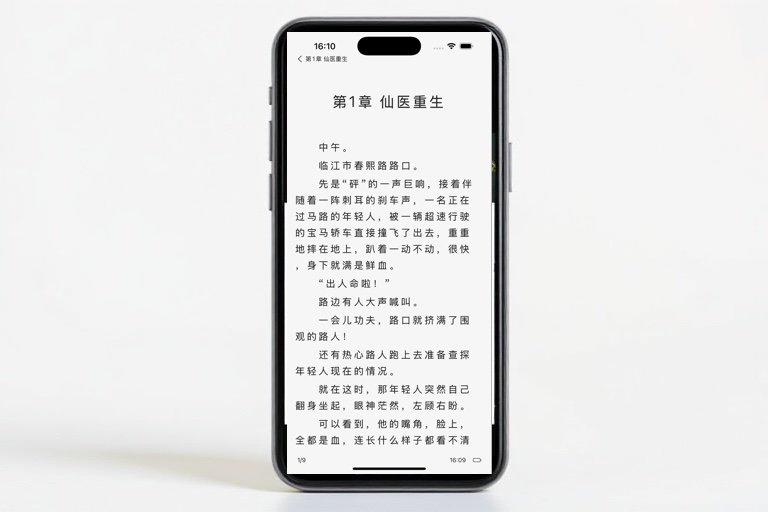
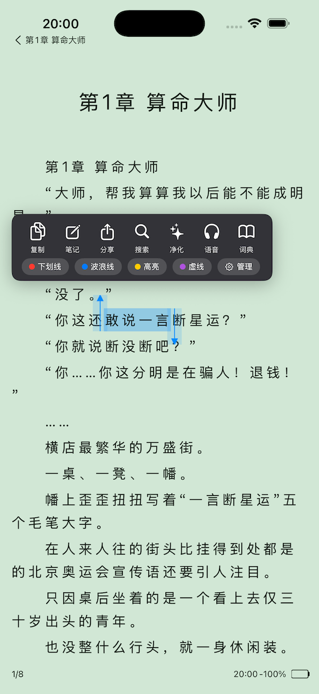

阅读阅多支持导入本地小说，提供多角色听书、AI 书籍处理、章节问答总结、自由阅读主题和排版设置，让阅读、听书和理解故事都更顺手。


核心能力
围绕本地小说阅读重新设计：管理书籍、沉浸阅读、听书播放、AI 辅助和界面自定义都在同一个应用里完成。
导入本地小说文件后统一管理阅读进度、最近阅读和未读内容，适合把自己的小说库随身携带。
按人物和旁白切换不同声音，让对话、旁白和剧情推进更有层次，通勤和睡前也能继续阅读。
对书籍内容进行处理和理解，帮助提炼情节、角色关系和重点信息，减少回看成本。
可针对当前章节或整本书提问，快速生成章节总结、全书总结和阅读思路梳理。
自由调整字体、字号、行距、背景、页眉页脚和图片背景，让长时间阅读更舒适。
阅读器之外，应用整体主题也可调整，列表、工具栏和阅读环境保持一致的视觉风格。
应用展示
从阅读器工具、AI 助手到主题编辑，每个功能都服务于更稳定、更个人化的小说阅读体验。
阅读时可复制、笔记、分享、搜索、净化、语音和查词，处理文字不离开当前章节。
未读书籍、阅读进度、最近阅读和推荐阅读都可以快速提问，并生成章节或全书总结。
背景色、背景图片、透明度、文字颜色、页眉页脚和图片位置都能细致设置。
阅读阅多不是单一阅读器，而是围绕小说内容的阅读、听书、理解和个性化工具箱。
"本地小说导入后可以直接读，阅读进度和排版都很稳定，最喜欢的是背景和字体能调到自己习惯的样子。"
林雨晴
资深读者
"多角色听书比单一朗读更有代入感，人物对话和旁白分开后，走路时听小说也能跟上剧情。"
张佳怡
听书用户
"看长篇时 AI 总结很有用，忘了前面人物关系可以直接问，不需要翻很久找伏笔。"
陈明远
长篇小说读者
围绕本地小说阅读、听书、AI 和自定义设置的常见问题。
阅读阅多目前支持 iOS 系统的手机和平板设备，适合在 iPhone 和 iPad 上管理本地小说并持续阅读。
可以通过系统文件、分享入口或下载后的本地文本文件导入。导入后即可在应用内管理书籍、阅读进度和最近阅读。
AI 阅读助手可用于章节总结、全书总结、阅读问答和思路整理。它适合快速回顾剧情、理解人物关系和整理阅读重点。
听书支持语音朗读和多角色播放，可根据人物、旁白和阅读场景切换声音，减少单一朗读带来的疲劳。
可调整背景色、背景图片、文字颜色、字号、间距、页眉页脚、图片透明度和位置，也可以配置应用整体主题。
会员特权包括无广告阅读体验、更多 AI 与听书能力、主题背景设置、下载和高级自定义等权益。详细信息请查看会员服务区域。
苹果应用内支付自动续费用户可在 iPhone 设置中进入 Apple ID 订阅管理页面取消。请在订阅期结束至少 24 小时前完成取消。